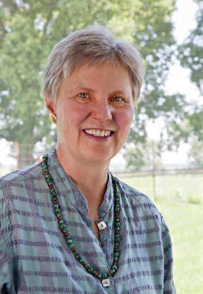

Playwright
Mary Swander
An award-winning writer of drama, poetry, and nonfiction, and a former Poet Laureate of Iowa. Practical Farmers of Iowa commissioned her to write Map of My Kingdom in 2014, and it has toured from the Federal Reserve Bank in Chicago to New York University. She is the Artistic Director of Swander Woman Productions and the Executive Director of AgArts.